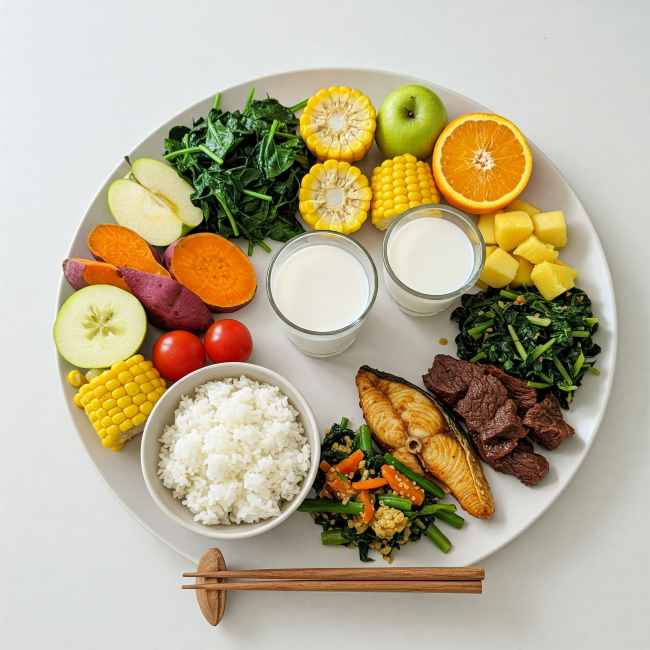
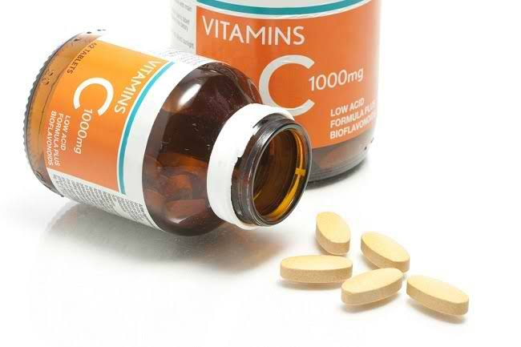
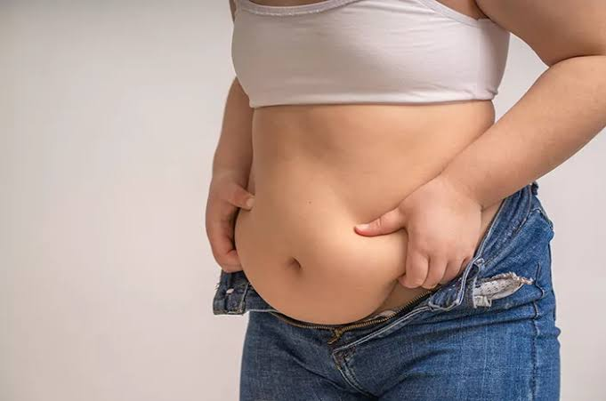
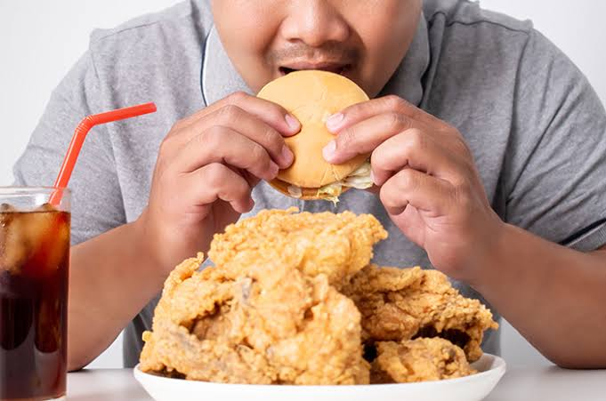

Obesitas Tingkatkan Risiko Terkena 9 Penyakit Ini
Seseorang dianggap obesitas ketika indeks massa tubuh atau body mass index (BMI) di atas 30, atau bisa dikatakan ia memiliki kelebihan berat badan sebesar 20 persen.
Berat Terlalu Berlebih
Tinggi (cm): 155
Berat (kg): 72
BMI kamu: 30
Utamakan hidup sehat dengan mengatur pola makan rendah kalori dan fokus pada penurunan berat badan yang berkelanjutan.
Fokus pada sayur dan buah tinggi serat, pilih protein tanpa lemak, batasi karbohidrat sederhana, hindari gorengan dan gula berlebih, serta perbanyak air putih.

Fokus pada vitamin C, D, dan E dari buah, sayur, ikan, kacang, serta biji-bijian untuk membantu daya tahan tubuh, mendukung metabolisme, dan mengurangi risiko peradangan.

Baca artikel pilihan yang disesuaikan denganmu

Seseorang dianggap obesitas ketika indeks massa tubuh atau body mass index (BMI) di atas 30, atau bisa dikatakan ia memiliki kelebihan berat badan sebesar 20 persen.

Bukan rahasia lagi kalau obesitas atau kelebihan berat badan bisa menimbulkan sederet penyakit bagi tubuh.